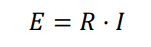
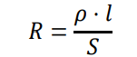
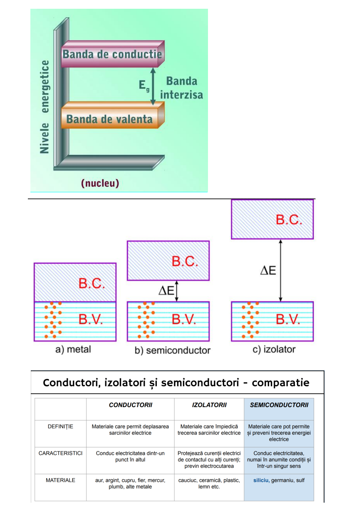

Experiment virtual
Proprietatea unei substanţe de a conduce curentul electric poate fi caracterizată prin conductivitatea sa electrică. Curentul electric reprezinta transferul de sarcină electrică. Sarcina poate fi transportată prin metale precum şi prin electroliţi lichizi puri (saruri topite). Acest tip de conductivitate este numită conductivitate metalică. Aceasta implică mişcarea electronilor între atomii de metal, fără a avea loc nicio modificare chimică a metalului. Conductivitatea ionică sau electrolitică reprezintă transportul curentului electric prin mişcarea ionilor printr-o soluţie sau un lichid pur. Ionii încărcaţi cu sarcini pozitive migrează spre electrodul negative, în timp ce ionii încărcaţi cu sarcini negative se deplasează spre electrodul pozitiv. Ambele tipuri de conductivitate ionică şi metalică apar în celulele electrochimice. Pentru conductorii de ordinul II, la fel ca si pentru cei de ordinul I se aplica legea lui Ohm:
unde E este tensiunea in volti; R rezistenta in ohmi (Ω) si I intensitatea curentului in amperi Rezistenta conductorilor de ordinul I este data de relatia:
Materialele conductoare sunt cele care pot conduce electricitatea într-o măsură mai mare sau mai mică. Aceste tipuri de materiale permit electronilor să circule liber și fluid dintr-un punct în altul dacă sunt conectați la o sursă de energie.
Nu oferă nicio rezistență la trecerea curentului electric prin ele, asigurând libera circulație a acestuia. Ele permit circulația liberă a electronilor între particule, ceea ce facilitează conducerea electricității. Cuprul este folosit ca referință pentru a măsura și compara nivelurile de conductivitate ale altor materiale. Au un număr mare de electroni liberi care se deplasează prin ele, facilitând transmiterea sarcinii de la un obiect la altul. Au o structură atomică care permite curentului electric să circule fără a necesita o cantitate mare de energie pentru trecerea electronilor între un atom și altul. Sunt foarte maleabile - adică pot fi manipulate fără a se rupe. Au rezistență ridicată la uzură și pot fi expuși la condiții extreme, precum temperaturile ridicate, fără a fi afectați. Au un strat izolator, astfel încât curentul electric să nu intre în contact cu suprafața în care este utilizat în casă sau industrial.
Materialele conductoare sunt clasificate în funcție de modul în care este condusă electricitatea. Conductori metalici: electronii liberi transportă sarcina, deci conducția este electrică. Atât metalele, cât și aliajele (fuziunea unuia sau mai multor metale) aparțin acestei clasificări. Conductori gazoși: aceștia sunt în stare gazoasă și trec printr-un proces de ionizare în care câștigă sau pierd electroni; aceasta le oferă capacitatea de a conduce electricitatea. Conductori electrolitici: conducția electrică în aceste materiale are loc printr-o reacție chimică care împarte o substanță purtătoare de sarcină în poli pozitivi și negativi. Cu acest tip de material, curentul electric circulă pe măsură ce materia este deplasată. Prin ce sunt diferite materialele conductoare de semiconductori și izolatori? Spre deosebire de materialele conductoare, materialele izolatoare împiedică curgerea sarcinilor electrice, iar semiconductorii pot permite și opri conducerea energiei electrice. Materialele izolatoare protejează, de asemenea, curenții electrici de contactul cu alte surse și curenți. Materialele semiconductoare, pe de altă parte, conduc electricitatea în condiții specifice și întro singură direcție, în timp ce o împiedică să curgă în direcția opusă. Materialele izolante includ cauciuc, lemn, plastic și ceramică; câțiva semiconductori sunt siliciu, germaniu și sulf. Exemple de materiale conductoare Argint: este considerat cel mai bun conductor de electricitate, deși este adesea folosit doar în cazuri specifice datorită costului său ridicat. Cuprul: acesta este materialul conductor prin excelență. Deși nu are aceeași conductivitate ca argintul, costul său scăzut înseamnă că este utilizat în majoritatea sistemelor de cablare a mașinilor și a aparatelor. Aur: La fel ca argintul, este folosit ca conductor în aplicații specifice, cum ar fi telefoane sau ceasuri. Oțel și aluminiu: se caracterizează prin costul lor scăzut și conductivitate ridicată. Sunt frecvent utilizate în zonele industriale. Bronz: are caracteristici asemănătoare cu argintul și aurul, adică este foarte conductiv, dar are un cost ridicat pentru a fi folosit în mod regulat. Hidrogen: un gaz excelent cu conductivitate electrică ridicată. Cu toate acestea, tinde să aibă o anumită instabilitate chimică atunci când trece prin procesul de ionizare. Mercur: deși nu este folosit des din cauza nivelurilor sale ridicate de toxicitate, acest material poate fi în stare gazoasă, lichidă sau solidă, în funcție de temperaturile la care este supus. Soluții saline: acestea sunt conductoare perfecte datorită procesului de ionizare a sărurilor în medii apoase.
Disclaimer:
Circuitul este ideal
Pentru toate materialele: S=1 cm^2 și l=2 cm
Toate valorile sunt comparate cu cuprul
| Nume | Rezistivitate (Ω·m) |
|---|---|
| Cupru | 1.68 × 10^-8 |
| Aluminiu | 2.82 × 10^-8 |
| Aur | 2.44 × 10^-8 |
| Argint | 1.59 × 10^-8 |
| Inox | 6.90 × 10^−7 |
| Lemn | ∞ |
| Sticla | ∞ |
| Plastic | ∞ |
| Hartie | ∞ |